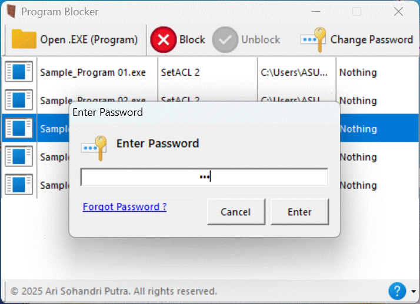

|
| Donate: |
 |
 |
Program Blocker
Program Blocker is a simple tool designed specifically for Windows. Its main purpose is to help you protect programs on your computer from unwanted access. This tool works by blocking .EXE format programs, whether they are already installed on your computer or portable programs that can be run directly without installation. With Program Blocker, you can control who is allowed to open these programs. Only you, as the password owner, can access the blocked programs.
One of the advantages of Program Blocker is that it is **portable**. This means you don’t need to install it on your computer. Just run it directly from a flash drive, external hard drive, or any folder on your computer. This makes Program Blocker very flexible and easy to use anywhere, even on computers that aren’t yours.
Using Program Blocker is very easy. First, you create a password to secure the tool. After that, you simply select the .EXE programs you want to block. Once a program is blocked, no one else can open it without knowing the password you created. This makes Program Blocker very useful for protecting important or confidential programs on your computer.
Program Blocker can be used to block all types of .EXE programs on your computer. For example, you can block office applications, games, browsers, or other software. This way, you don’t have to worry about someone else trying to open these programs without permission. Program Blocker gives you peace of mind because you have full control over the programs on your computer.
In addition, Program Blocker is very lightweight and doesn’t use much of your computer’s resources. You don’t have to worry about your computer slowing down because this tool works efficiently. So, if you want to maintain the privacy and security of programs on your computer, Program Blocker is a practical, easy-to-use solution that you can take anywhere thanks to its portable nature.
Create Password
| 1. | Download and open the Program Blocker. |
| 2. | A notification will appear as shown below, and click OK. |
 |
|
| 3 | After that, the Program Blocker will appear and click the Create Password button in the upper right corner, as shown below. |
 |
|
| 4 | And create your password in the form as shown below and click the Create button and the program will restart automatically. |
 |
|
| 5 | Program Blocker is ready to use. |
 |
Contact
Send feedback, development cooperation, translating this program and website or other questions? Please send to e-mail programblocker@gmail.com
© 2025 Ari Sohandri Putra. All rights reserved.
 |
||||||||||||||||||||
|
||||||||||||||||||||